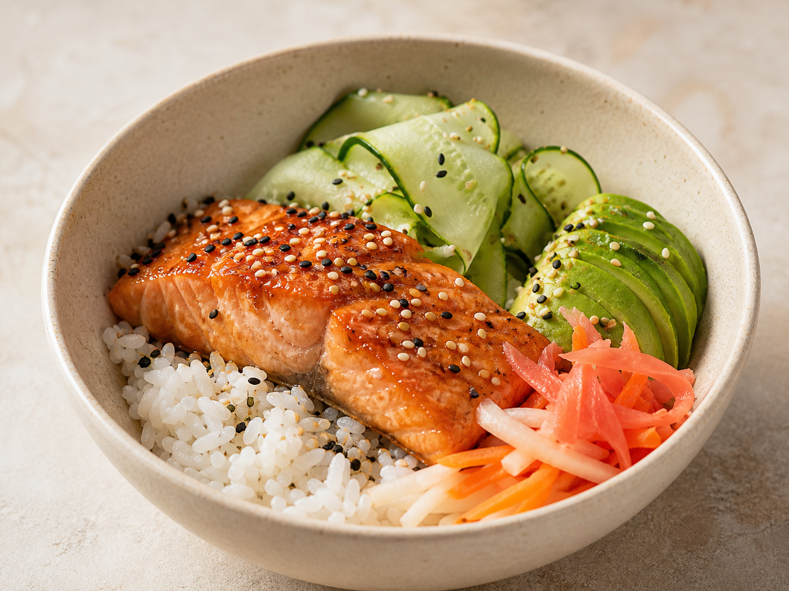
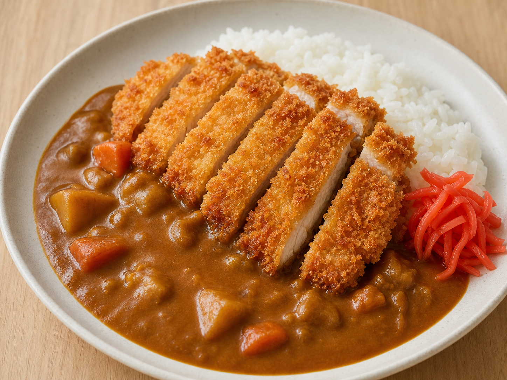
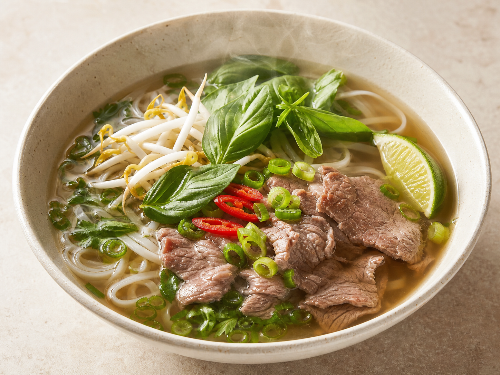

Miso Salmon Bowl20 min · Easy · Last made 18 days ago
Weekly plan
Pick from dishes you already know.



Planning only links this dish to Tuesday. Your recipe, notes, and cooking history stay untouched.